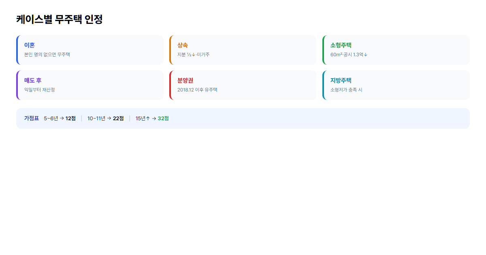
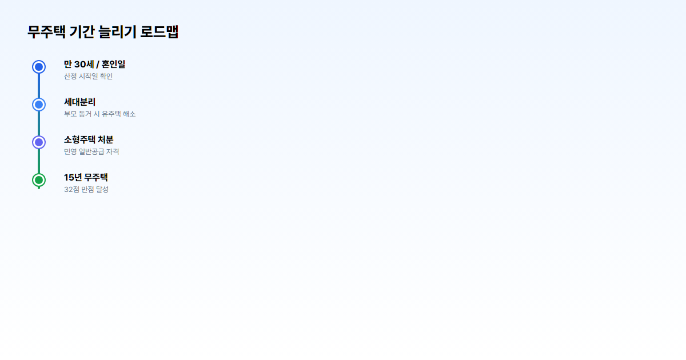

2026 무주택 기간 인정 기준 완벽 정리 (이혼·상속·소형주택·지방거주 케이스별)
청약 가점 84점 중 무주택 32점, 1년 차이가 당첨을 가른다
"내 무주택 기간, 도대체 언제부터 인정되는 거지?" 청약을 준비하다 보면 가장 많이 듣는 질문입니다. 2026년 현재 청약 가점 84점 중 무주택 기간만 32점으로 비중 1위인데, 1년 차이가 가점 2점이고, 수도권 민영 아파트에서는 2점이 당첨과 탈락을 가를 수 있습니다. 이혼·상속·소형주택·지방 거주·분양권 등 케이스마다 기준이 달라 헷갈리기 쉽습니다. 이 글에서는 청약홈· 한국부동산원 고시를 바탕으로 케이스별 인정 기준과 실전 시뮬레이션을 정리합니다.
- 만 30세·혼인신고일 등 산정 시작일과 세대 전체 무주택 판정 원칙을 표로 정리합니다.
- 이혼·상속·소형 저가주택·지방·분양권 등 6가지 핵심 케이스별 인정 기준을 설명합니다.
- 실제 가점 시뮬레이션 5선과 FAQ, 청약 가점 계산기 연계 방법까지 담았습니다.
본론 1. 무주택 기간 산정 기본 원칙
산정 시작일은 언제?
무주택 기간은 만 30세 생일부터 산정하는 것이 대원칙입니다. 다만 만 30세 이전에 혼인한 경우에는 혼인신고일부터 산정합니다. 청약 가점은 "얼마나 오래 무주택으로 살아왔는가"를 보상하는 제도이므로, 주택을 소유했던 기간은 빼고, 무주택으로 지낸 기간만 누적합니다.
사례 2 — 32세에 결혼한 B씨 → 30세 생일부터 산정 (혼인 전 2년은 30세부터 포함)
⚠️ 흔한 오해
"20세부터 계산되지 않나요?" → 아닙니다. 청약통장 가입 기간(12점)과 무주택 기간(32점)은 별개입니다. 무주택 기간은 원칙적으로 만 30세 또는 혼인신고일 중 빠른 기준일부터입니다.
무주택 판정 대상 (세대 전체)
청약 신청 시 세대구성원 전원이 무주택이어야 합니다. 대상은 본인 + 배우자 + 직계존비속(세대원인 경우)이며, 주민등록표상 동일 세대 기준으로 판단합니다. 분리세대인 부모(만 60세 이상)는 일부 청약 유형에서 판정 대상에서 제외될 수 있으나, 일반공급 가점제에서는 세대원 포함 여부를 꼼꼼히 확인해야 합니다.
| 세대원 | 무주택 판정 | 비고 |
|---|---|---|
| 본인 | 필수 무주택 | 명의·지분·분양권 포함 |
| 배우자 | 필수 무주택 | 별거 중에도 법적 부부면 합산 |
| 미성년 자녀 | 동일 세대 시 포함 | 자녀 명의 주택도 세대 주택 수 |
| 부모(동거) | 동일 세대면 포함 | 60세 이상·분리세대는 유형별 상이 |
| 분리세대 부모 | 일부 제외 가능 | 청약 유형·공급별 확인 필요 |
무주택 기간 점수표
무주택 기간 가점은 매 1년마다 2점씩 증가하며, 15년 이상이면 32점 만점입니다. 예를 들어 무주택 7년이면 14점, 10년이면 20점 수준입니다.
| 무주택 기간 | 가점 |
|---|---|
| 1년 미만 | 2점 |
| 1~2년 | 4점 |
| 3~4년 | 8점 |
| 5~6년 | 12점 |
| 10~11년 | 22점 |
| 15년 이상 | 32점 (만점) |
대출 준비와 함께 청약을 병행한다면 보금자리론 vs 디딤돌 비교 글과 함께 읽으면 "무주택 유지"와 "내집마련 시점"을 한 번에 설계할 수 있습니다.
본론 2. 케이스별 무주택 인정 기준 — 핵심
CASE 1: 주택을 보유했다가 매도한 경우
과거 주택을 보유했다가 매도한 경우, 무주택 기간은 매도일 다음 날부터 다시 산정합니다. 예를 들어 2020년 1월 15일에 집을 팔았다면, 2020년 1월 16일부터 무주택 1일째로 카운트됩니다. 매도 후 다시 주택을 취득하면 그 시점부터 유주택으로 전환되며, 이후 다시 매도해야 무주택 기간이 새로 쌓입니다.
CASE 2: 이혼 시 무주택 인정
이혼 후 본인 명의 주택이 없으면 무주택으로 인정됩니다. 이혼하며 배우자에게 주택을 양도한 경우, 본인은 이혼 확정일부터 즉시 무주택으로 봅니다. 반면 이혼 과정에서 본인이 주택 분할을 받았다면, 그 등기 완료일부터 유주택입니다.
재혼한 경우에는 재혼일부터 새 배우자의 주택 보유 여부가 다시 합산됩니다. 이혼 전 배우자 명의 주택은 본인 무주택 기간 산정에 직접 "빼는" 개념이 아니라, 당시 세대원으로서 유주택 기간으로 잡혔을 수 있으므로 이력 확인이 필요합니다. 위장 이혼 방지를 위해 자녀 양육·실질 혼인관계 등을 함께 심사하는 경우도 있습니다.

CASE 3: 상속으로 인한 주택 보유
상속으로 주택 지분을 받았더라도, 일정 조건을 충족하면 무주택으로 인정될 수 있습니다. 대표적으로 상속 지분 1/2 이하이고 본인이 거주하지 않는 경우, 또는 상속 후 3개월 이내 처분(매매·증여 등)한 경우 무주택 인정 사례가 있습니다.
예: 부모 사망 후 형제 3명이 각 1/3 지분 상속 → 본인 지분 1/3, 미거주 → 무주택 인정 가능. 반면 단독 명의로 상속 등기가 완료되면 유주택으로 보는 것이 일반적입니다. 상속 주택은 가액·면적에 따라 소형 저가주택 예외(CASE 4)와 겹칠 수 있으니 함께 확인하세요.
CASE 4: 소형 저가주택 보유 ★ 매우 중요
60㎡ 이하이면서 공시가격이 수도권 1.3억원 이하, 지방 8천만원 이하인 주택은 민영주택 일반공급 청약 시 무주택으로 간주됩니다. 국민주택(국민·행복), 특별공급(신혼·생애최초 등)에는 이 예외가 적용되지 않는 경우가 많습니다.
💡 2024년 이후 비아파트 확대
- 60㎡ 이하 비아파트(빌라·오피스텔 등)도 공시가격 수도권 1억·지방 8천만 이하면 무주택 간주(민영 일반공급).
- 사례: 수도권 소형 빌라 전용 45㎡, 공시가격 1억원 → 민영 일반공급 청약 시 무주택.
- 공시가격은 주택공시가격 알리미·정부24에서 확인합니다.
CASE 5: 지방 주택 보유
"수도권 청약인데 지방에 집 있으면 무조건 유주택?" — 항상 그렇지는 않습니다. 지방 주택이라도 소형 저가주택 요건(60㎡ 이하·공시 8천만 이하)을 충족하면 민영 일반공급에서 무주택 인정될 수 있습니다. 예: 전남 부모 상속 주택, 공시가격 5천만원, 미거주 → 조건 충족 시 무주택. 면적·가격 초과 시에는 유주택으로 잡히므로 청약 유형별로 재확인하세요.
CASE 6: 분양권·입주권 보유
2018년 12월 11일 이후 취득한 분양권·입주권은 주택 수에 포함되어 유주택입니다. 그 이전에 취득한 분양권은 당시 고시에 따라 무주택 인정되었으나, 현재 신규 취득분은 대부분 유주택 처리됩니다. 청약 당첨 시에도 즉시 유주택으로 전환되므로, 가점·자격 모두 재계산됩니다. 분양권은 아직 집이 완공되지 않은 "집을 살 권리", 입주권은 준공 후 입주 전 단계의 권리로 이해하면 됩니다.
본론 3. 자주 헷갈리는 상황 정리
부모님 명의 주택이 있는데 함께 살고 있어요
부모가 만 60세 이상이고 직계존속이며, 일반공급 가점에서 분리세대로 인정되면 부모 주택이 본인 무주택 판정에 포함되지 않을 수 있습니다. 부모가 60세 미만이거나 동일 세대로 등재되어 있으면 부모 명의 주택이 있어도 본인은 유주택 세대로 처리됩니다. 세대분리는 주민센터 신고 + 실제 별도 거주 입증(임대차·전입 등)이 함께 요구될 수 있습니다.
배우자 명의 주택은 어떻게 되나요?
결혼 전 배우자 명의 주택이 있었다면, 혼인신고일부터 본인도 유주택 세대로 봅니다. 결혼 전 배우자가 주택을 매도한 뒤 혼인했다면, 본인 무주택 기간에는 직접 영향이 없습니다. 별거 중이라도 법적 혼인 관계가 유지되면 배우자 주택은 합산됩니다.
오피스텔·생활숙박시설 보유는?
주거용 오피스텔(실질 주거, 전입신고 등)은 주택 수에 포함되어 유주택일 수 있습니다. 업무용 오피스텔은 주택 수 미포함 → 무주택. 생활숙박시설은 비주택으로 무주택 인정되는 경우가 많습니다. 용도·전입신고·건축물대장상 용도를 서류로 입증해야 합니다.
농어촌주택 특례
농어촌 지역의 일정 규모·가격 이하 주택은 청약 유형에 따라 무주택 인정 특례가 있습니다. 면(面) 지역 여부, 전용면적, 공시가격 상한 등 조건을 모두 충족해야 하므로 청약홈 공급규칙을 확인하세요.
무주택 기간 계산 시뮬레이션 5선
① 32세 미혼, 6년 전 매도
만 30세 이후 계속 무주택, 6년 전 전 주택 매도 → 현재 무주택 6년 → 12점. 청약통장·부양가족 가점과 합산해 총점을 계산하세요.
② 28세 결혼, 무주택 유지
28세 혼인, 이후 주택 미보유 → 산정 시작일 혼인신고일(28세). 현재 33세라면 무주택 5년 → 12점(만 30세보다 혼인일이 빠르므로).
③ 40세, 부모 60대와 동거, 부모 명의 주택
동일 세대·부모 명의 아파트 보유 → 유주택 세대. 무주택 기간 가점 0~2점 수준. 세대분리·별도 거주 검토 필요.
④ 35세, 상속 1/3 지분 + 미거주
형제와 1/3 지분 상속, 타지 거주 → 조건 충족 시 무주택 인정. 30세 이후 무주택 5년이면 12점 + 다른 가점 합산.
⑤ 30세, 소형빌라(공시 9천) 보유, 민영 일반공급
수도권 55㎡, 공시 9천만원 → 소형 저가주택 요건 충족 → 무주택 인정. 무주택 3년이면 8점. 특별공급 신청 시에는 별도 유주택 판정.

무주택 기간 늘리는 합법 전략
- 세대분리 — 부모 60세 미만·동거 시 유주택 세대를 피하려면 실거주 분리 + 행정 처리.
- 분양권 매도 시점 — 보유 시 유주택이므로, 청약 전 처분 일정을 미리 관리.
- 결혼 시점 — 30세 전 혼인 vs 후 혼인에 따라 산정 시작일이 달라지므로 가점 시뮬레이션 필수.
- 청약 직전 자격 재확인 — 청약홈·주민센터 무주택 확인서로 최종 점검.
청약 가점 계산기에 무주택 기간·통장·부양가족을 입력하면 84점 만점 중 내 점수를 빠르게 확인할 수 있습니다.
자주 묻는 질문 (FAQ)
Q1. 만 30세 전에 잠깐 결혼하고 이혼했어요. 무주택 기간은?
혼인·이혼 이력과 주택 보유 이력을 모두 확인해야 합니다. 이혼 후 무주택이고 주택을 보유하지 않았다면, 혼인신고일 또는 30세 중 빠른 날부터 무주택 기간을 산정하되, 혼인 중 유주택 기간은 제외됩니다. 정확한 산정은 청약홈 자격확인을 권장합니다.
Q2. 부모님과 같은 집에 사는데 세대분리하면 무주택 인정되나요?
분리세대 등록 + 실제 별도 거주 입증 시 일반공급에서 무주택 인정될 수 있습니다. 부모가 60세 이상이면 규정이 유리한 경우가 많습니다. 단순 등본 분리만으로는 부족할 수 있으니 관할 주민센터·청약홈 FAQ를 확인하세요.
Q3. 청약 당첨됐다가 포기한 경우 무주택 인정?
당첨·계약 시점에 유주택으로 처리된 이력이 남을 수 있습니다. 포기·해지 후에는 다시 무주택으로 전환되나, 유형·시점에 따라 제재·재당첨 제한이 적용됩니다. 포기 전후 무주택 기간은 당첨 계약 여부에 따라 달라집니다.
Q4. 외국에 집이 있어도 무주택 인정?
국내 청약의 무주택 판정은 원칙적으로 국내 주택 기준입니다. 해외 부동산은 통상 국내 무주택 판정에 포함되지 않으나, 최근 규정·유형별로 확인이 필요하면 한국부동산원에 문의하세요.
Q5. 무주택 기간 입증 서류는 뭐가 필요한가요?
주민등록등본, 가족관계증명서, 무주택 확인서, 매매계약서·등기사항전부증명서(과거 보유 이력), 혼인관계증명서(혼인·이혼) 등이 필요할 수 있습니다. 청약 접수 시점 기준 1개월 이내 발급본을 요구하는 경우가 많습니다.
Q6. 청약 가점 계산기로 자동으로 알 수 있나요?
가능합니다. 청약 가점 계산기에 무주택 기간·청약통장·부양가족·혼인 여부를 입력하면 예상 가점을 계산합니다. 다만 소형 저가주택·상속 지분 등 예외는 직접 조건을 선택·확인해야 합니다.
Q7. 신혼특공·생애최초 시 무주택 기준은 다른가요?
다릅니다. 특별공급은 무주택 요건이 더 엄격하고, 소형 저가주택 무주택 간주 예외가 적용되지 않는 경우가 많습니다. 신혼·생애최초는 별도 자격(소득·주택가격·무주택)을 충족해야 하며, 생애최초 대출·청약 가이드와 함께 확인하세요.
결론
무주택 기간은 청약 가점 32점을 좌우하는 핵심 변수입니다. ① 산정 시작일은 만 30세 또는 혼인신고일, ② 세대원 전원 무주택이 원칙, ③ 이혼·상속·소형·지방·분양권은 케이스별 예외를 꼭 확인하세요. 본인 케이스가 애매하면 청약홈· 한국부동산원 자격 확인을 먼저 하세요.
본 글은 2026년 6월 기준 일반 정보이며, 무주택 판정·가점 기준은 청약 유형·고시에 따라 달라질 수 있습니다. 신청 전 청약홈 또는 한국부동산원에서 최종 확인하시기 바랍니다.